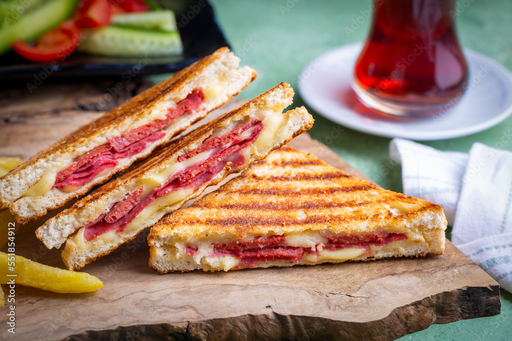

Turkish Toast

Lecker! Ein türkischer Toast benötigt nicht viel Aufwand und ist das
perfekte Essen für an einem Sonntagsfrühstück!
Ingredients
- Ingredient 1
- Ingredient 2
- Ingredient 3
- Ingredient 4
Steps to make your own turkish toast
- Step 1
- Step 2
- Step 3
- Step 4
- Step 5